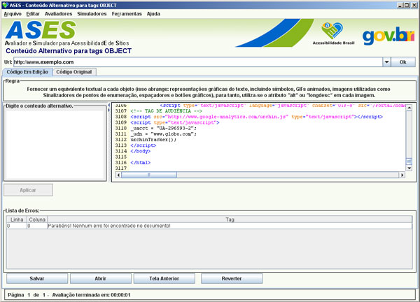

Associa conteúdo alternativo para tags Objects.

Url: Endereço da página que se deseja avaliar.
Digite o Conteúdo Alternativo: Campo para descrever o objeto sem descrição.
Código Fonte :
Aplicar: Aplica a descrição ao objeto selecionado na lista de erros.
Lista de Erros : Mostra as linhas e as mensagens de erro ou aviso encontradas na avaliação do CSS.
Salvar: Abre a opção de salvar o arquivo.
Abrir: Abre uma caixa de diálogo para abrir um arquivo CSS.
Salvar como: Abre uma caixa de diálogo para salvar o arquivo com outro nome mantendo o original.
Reverter: Recarrega o código original, sem edição alguma.
